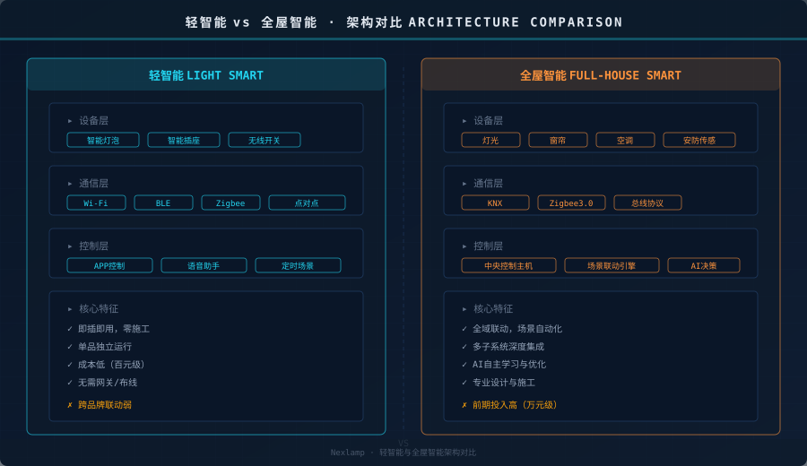
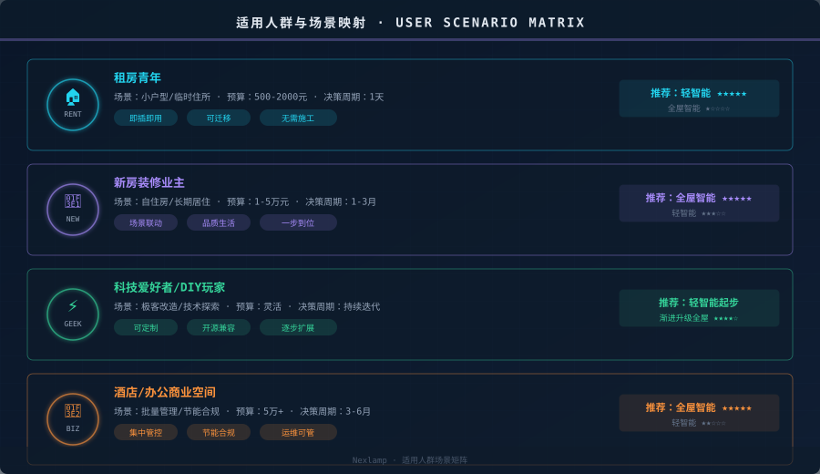
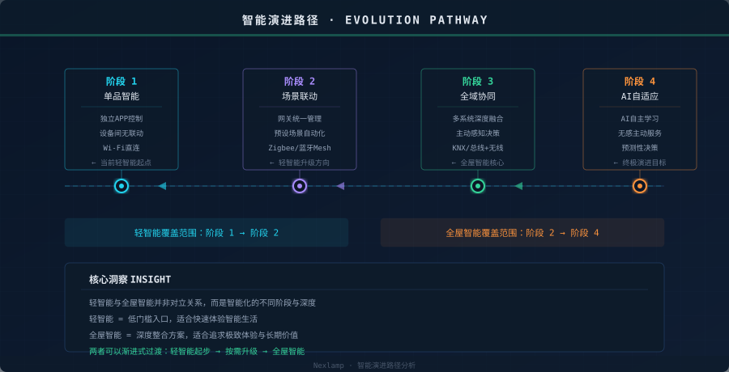

引言
"智能家居"这个词已经被说了十年，但大多数人买回家第一个智能设备后，往往会困惑：为什么我装了智能灯泡，离"全屋智能"还差那么远？
答案很简单——轻智能和全屋智能，根本不是同一件事。 它们不是"便宜版"和"豪华版"的区别，而是两种完全不同的技术架构和用户体验哲学。理解这个本质区别，是你做出正确选择的第一步。
架构差异：单品独立 vs 系统集成

轻智能的核心架构是"单品+云"。每个设备独立连接Wi-Fi或蓝牙，通过手机APP或语音助手单独控制。灯泡是灯泡，插座是插座，它们之间没有直接的通信链路。联动靠的是云端—if-then规则（"如果灯开了，就关窗帘"），延迟高、依赖网络、功能有限。
全屋智能的核心架构是"总线/网关+子系统"。所有设备通过Zigbee3.0、KNX等低延迟协议连接到本地网关或总线，再由中央控制主机统一调度。灯光、窗帘、空调、安防不再是独立设备，而是一个协同系统的不同执行单元。联动逻辑在本地执行，毫秒级响应，断网也能工作。
一句话总结架构差异：轻智能是"每个设备各自联网"，全屋智能是"所有设备组成一个网络"。
成本与门槛：百元起步 vs 万元入场
轻智能的门槛极低。一个智能灯泡几十元，一个智能插座百元出头，买回来插上电、连APP就能用。不需要布线、不需要施工、不需要设计，搬家时还能带走。这就是它最核心的优势——零门槛体验智能。
全屋智能的入场成本显著更高。一套基础方案（网关+灯光+窗帘+传感器）通常在1-3万元，如果涉及KNX总线、背景音乐、安防集成，投入可达5-10万甚至更高。更关键的是，全屋智能需要在装修阶段就介入——提前布线、设计回路、规划面板位置，一旦入住再改就非常困难。
体验差异：便利控制 vs 无感服务
轻智能解决的核心问题是"方便"——不用下床就能关灯，用语音就能调色温，出门时一键关掉所有设备。但本质上，你还是"控灯"的那个人，只是控制方式从走到开关旁边变成了掏手机或喊一声。
全屋智能解决的核心问题是"自动化"——系统根据时间、光线、人体存在、甚至你的行为习惯，主动做出决策。回家时灯光自动亮到舒适模式、窗帘自动打开、空调调到预设温度；离开房间后灯光自动关闭、设备进入节能状态。你不需控制任何东西，空间主动服务你。
轻智能让你更方便地控制设备，全屋智能让你不再需要控制设备。
适合谁：四类人群的精准匹配

1. 租房青年 → 首选轻智能
预算有限、住所不固定、不需要也不能动硬装。轻智能即插即用、可迁移的特性完美匹配。几百元就能实现语音控制灯光、定时开关空调、远程查看门口，搬家时拔了带走。
2. 新房装修业主 → 推荐全屋智能
既然要装修，管线预留成本几乎为零。一步到位的智能家居体验远优于后期零散添加。设计阶段就规划好灯光回路、窗帘电机、传感器点位，入住后享受真正的无感智能生活。
3. 科技爱好者 → 轻智能起步，渐进升级
享受折腾的过程。从几个智能灯泡开始，加网关、写自动化脚本、接入Home Assistant，逐步把轻智能升级为"准全屋智能"。这条路不需要专业施工，但需要技术能力和时间投入。
4. 商业空间 → 必须全屋智能
酒店、办公、展厅等场景需要集中管控、节能合规和运维可管。几十上百个房间的灯光空调不可能靠APP逐个控制，必须依赖中央系统统一调度。这是全屋智能的天然主场。
演进路径：不是对立，而是阶梯

轻智能和全屋智能不是非此即彼的选择，而是智能化的不同阶段。从单品智能开始，逐步升级场景联动，最终走向全域协同和AI自适应——这是一条清晰的演进路径。
对于大多数家庭，最务实的策略是：轻智能快速体验 → 发现真实需求 → 装修时升级全屋智能。 先用几百元验证"我到底需要哪些智能功能"，再在全屋方案中精准部署，远比一上来就花几万做全套方案更聪明。
结语
轻智能是智能生活的入口，全屋智能是智能生活的终局。选择哪种，不取决于哪个"更好"，而取决于你当前的生活阶段、预算和需求深度。搞清楚区别，才能把钱花在刀刃上。